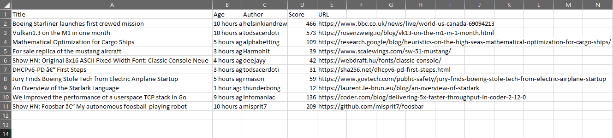
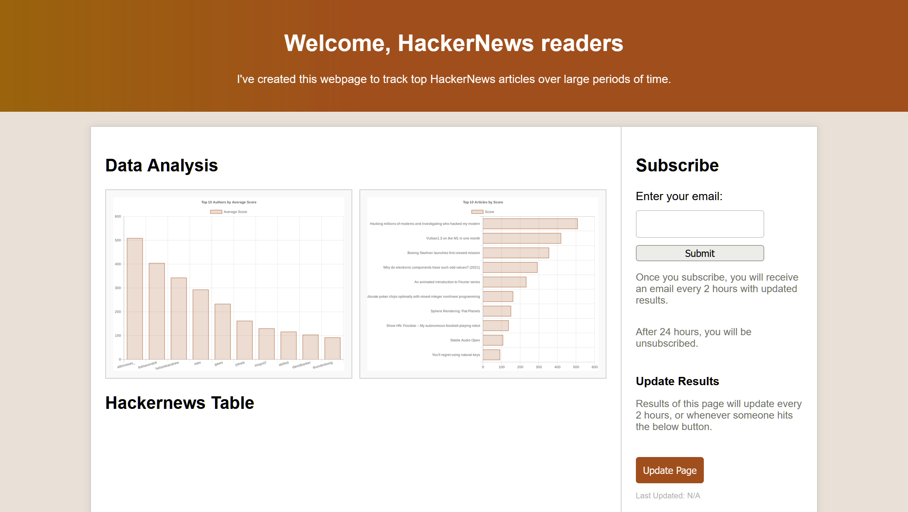

Project Overview
This JavaScript-based project was designed to create data visualizations of periodic versions of the same data over long periods of time to see how it changes. It uses the Microsoft Playwright framework to automate the process of extracting and updating article data from HackerNews. While this project was initially integrated into this website, it is now retired.
HackerNews is a website that provides a forum for users to post articles about the latest news in tech. This tool scrapes the top 10 articles from the main HackerNews page every couple of minutes and tracks the changes in these articles over time.
Key Features
Data Extraction
The core feature of this project is its ability to automate the extraction of article data from the HackerNews website. Utilizing Microsoft Playwright, the scraper navigates through the structure of the HackerNews main page to gather the following:
- Title
- URL
- Author
- Age
- Score
All of these would be saved in a file titled HackerNews.csv.
This automation script was integrated into a GitHub Codespace to allow it to run autonomously. Every 10 minutes, this script would run again and collect the information again, updating the HackerNews.csv with the latest iteration of the top ten scores.
Data Processing
Once the data is extracted, the program creates and updates several files and data visualization tools based on it. Two files need to be updated once this new information is collected: AuthorScores.csv and TopArticles.csv
AuthorScores.csv
This file keeps track of every unique author that we've seen publish an article that's made it to the top 10 spot on HackerNews, and keeps track of the average score they've achieved on their articles. Each time an author is seen, we update their average score, and increment the number of times we've seen them to accurately keep track of that average.
TopArticles.csv
This file is very simple. It keeps track of top 10 highest-scoring articles articles that the program has seen to date. If a new article is found with a score higher than the lowest scoring article on this file, it is inserted where it belongs and knocks the lowest-scoring article off of the record.
After the datasets have been updated, the data visualizations need to be updated to match. To do this, I used QuickChart.js to create graphical representation of the file data. New versions of both visualizations are generated.
Once all of this has been generated, it needs to be packaged up for transport. Using the JavaScript Archiver library, the three CSV files and the two PNG files are compressed into a ZIP file, awaiting being sent to the website directory via FTP.
Webpage Integration
Finally, the front-facing webpage has everything it needs to show off the data we've collected. The webpage is equipped with a few features of its own, as well:
Data View
Firstly, the main panel of the webpage is mean to display all of the current information to the user. This will show of the most recent update of the HackerNews.csv file, containing the latest top 10 rankings of articles. Additionally, both data visualization files that we generated before are displayed here, showing a long-term representation of how the articles behave.
Automatic Updating
Unlike the Codespace code, the website is only set to update its feed automatically every 2 hours. This period is frequent enough to remain relevant, but still allow for noticable changes with the manual updates.
Manual Updating
In the right sidebar of the webpage, we have an "Update" button that allows a visitor of the webpage to manually update the webpage's feed to the latest version of the data sent by the Codespace (up to 10 minutes old).
Email Subscription
An email subscription service can also be found in the right sidebar. Simply enter your email address and hit Submit and you will be temporarily subscribed to an email once every two hours, which lines up with the frequency of when the webpage's main feed updates. This subscription is only temporary, as after 24 hours you will be unsubscribed.
All of the functionality presented by the website is achieved by a series of .sh and .php scripts and cron scheduler jobs integrated into the panel of the website.
Since this website has been repurposed, this project is unfortunately decomissioned. However, I am proud of the integrations and features I was able to create for it. I do not have any plans to update or repurpose this as of yet. For the full project, please use the link at the top right of this page to vew the repository.